【赋墨沉湘·十一】我希望你被阅读，不被辜负。

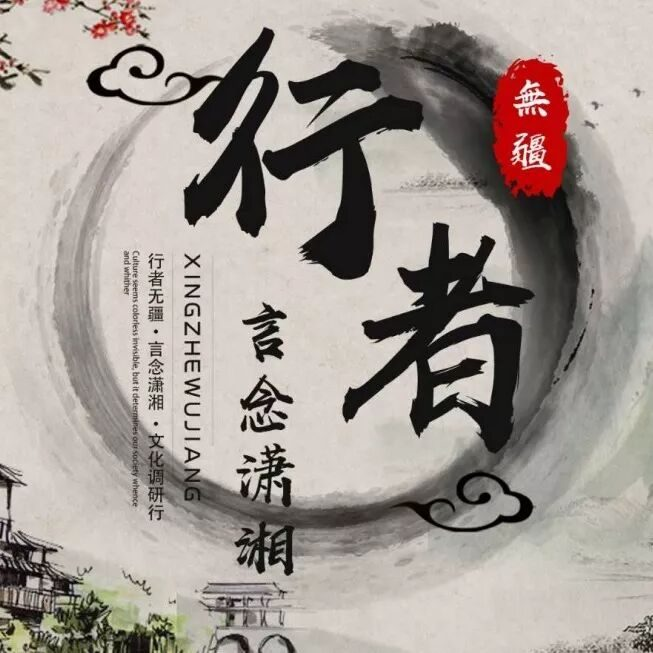
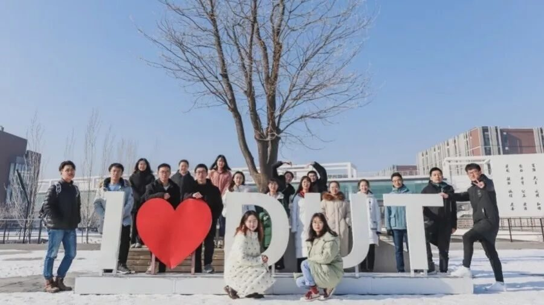
行者无疆实践团，我已经听过千千万万遍。
每一寸土木都有一方记忆，文化，因为被阅读，所以更有意义。
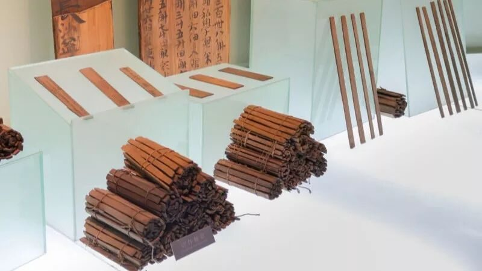
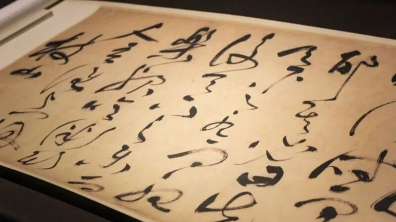
行者对文化调研的认真态度和热情追求，我一直默默关注着，却没有迈出一步的勇气。从填报名表，到一步步查询了解湖湘文化、采访湖南朋友关于湖湘文化的认识，再到准备面试，这个过程是漫长而艰难的。
“在即将到来的文化苦旅中，我们将共同书写精彩的故事，而你，也会不忘初心的，对吗？”但是还好，我没有退缩，我得到了认可,一切努力都是值得的。
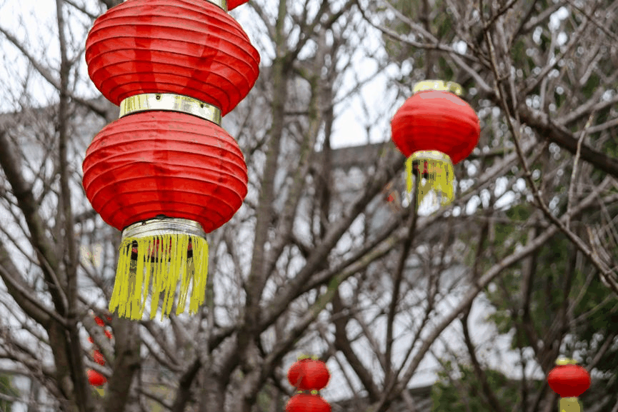
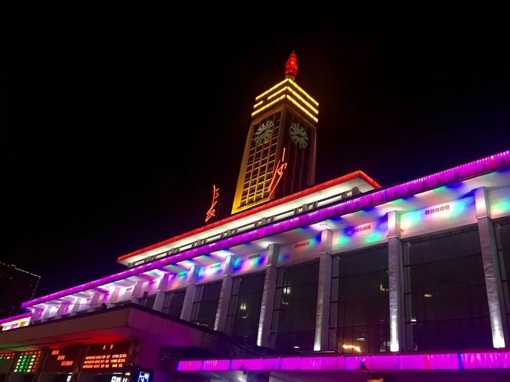
第一次见面会上，陌生的面孔让刚加入的我感动紧张，但是幸好，大家温暖亲切的笑容让我对这个大家庭有了真心的期待。到后来，我们一起拍照、采访、制作问卷、发放问卷、开会，我们更加熟悉，我们更加默契，我们的故事逐渐展开……
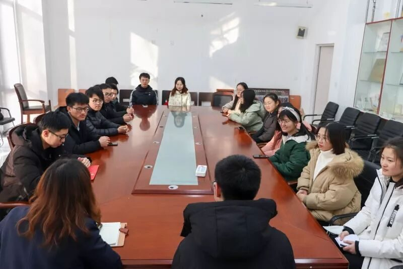
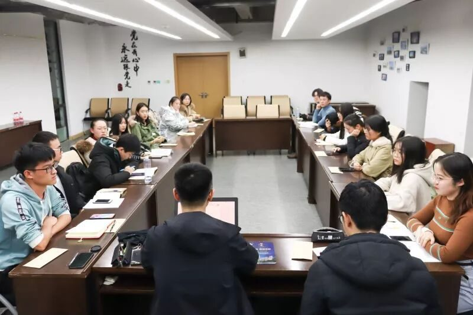
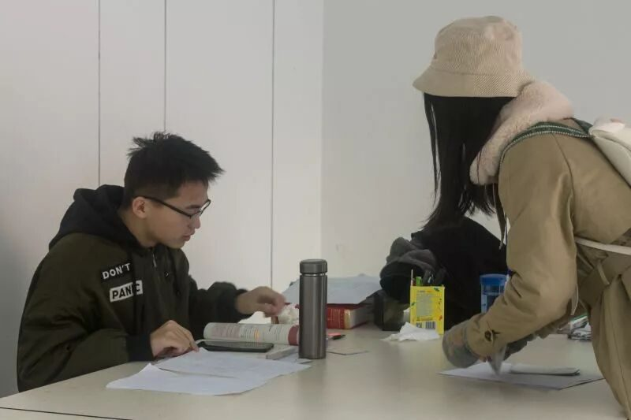
山水洲城——长沙的岳麓山、湘江水、橘子洲与湖湘文化一同构成了生动迷人的历史名城的巨幅画卷。在长沙的漫漫文化之旅，我们经历了许许多多。
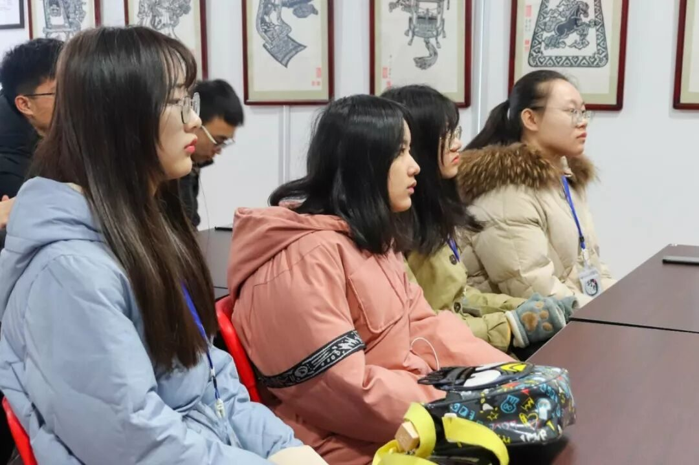
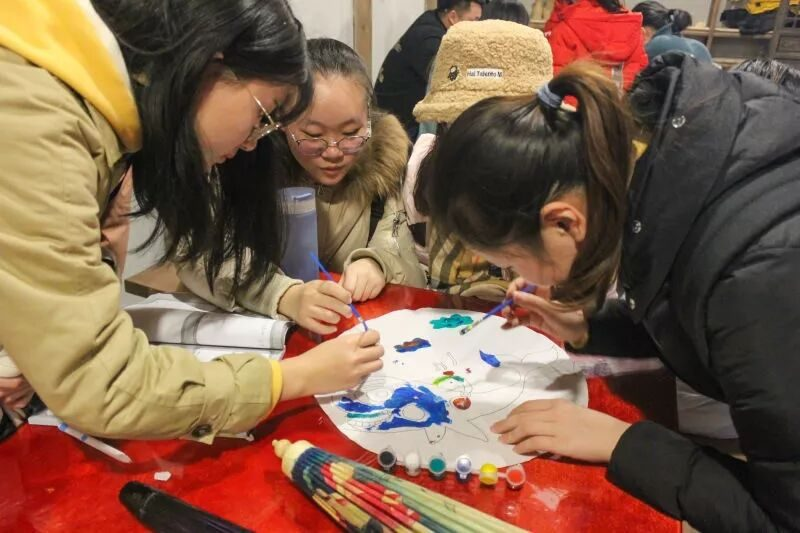
我们到达了士人学子们向往的求学圣地——岳麓书院，感受了书院的悠久文化、优良学风及其发展历史；我们感受了非遗文化的博大精深——湘绣的精巧细致、剪纸的精益求精都令我们折服和惊喜；我们观赏了那些饱含岁月痕迹、诉说着湖湘故事的历史文物——重现了湘楚文化的简牍、记载了海上丝绸之路的铜官窑、凝聚了古人智慧结晶的辛追墓；我们敬仰了文人先贤——命途多舛的贾谊、勤政为民的刘少奇、清廉如水的毛泽东。
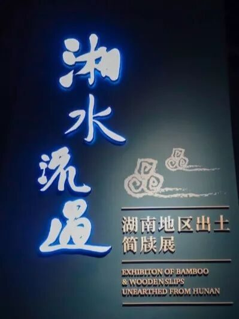
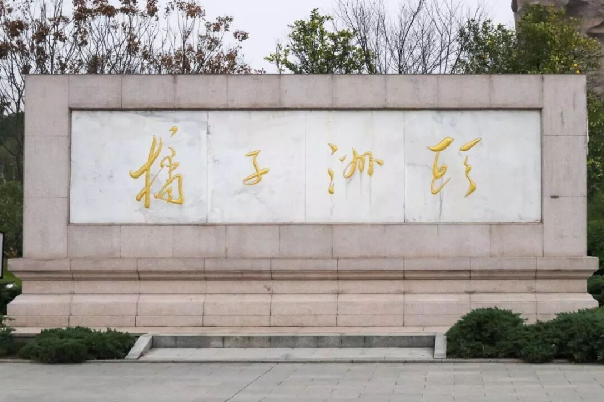
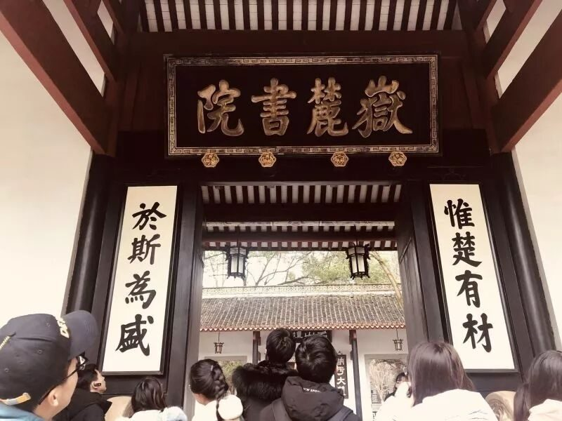
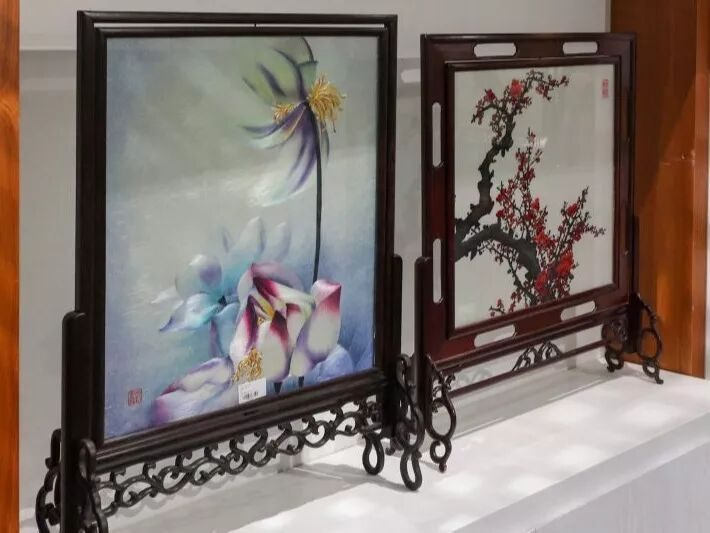
（部分图片来源：湖南省湘绣博物馆/研究所）
我们是穿梭在大街小巷的行者们，一次次向路人们绽开笑容介绍我们的文化调研、发放问卷。有过拒绝、有过失败，但我们更多记住的是，那每一次小小的成功和路人们向我们表达的支持态度。回收上来的每一份问卷，不仅仅是一张张薄纸，而是我们得到的认可，这让我们感到开心和满足。
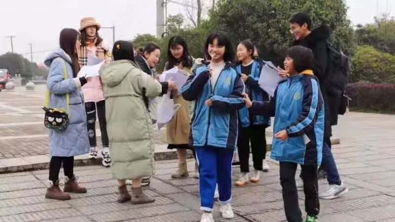
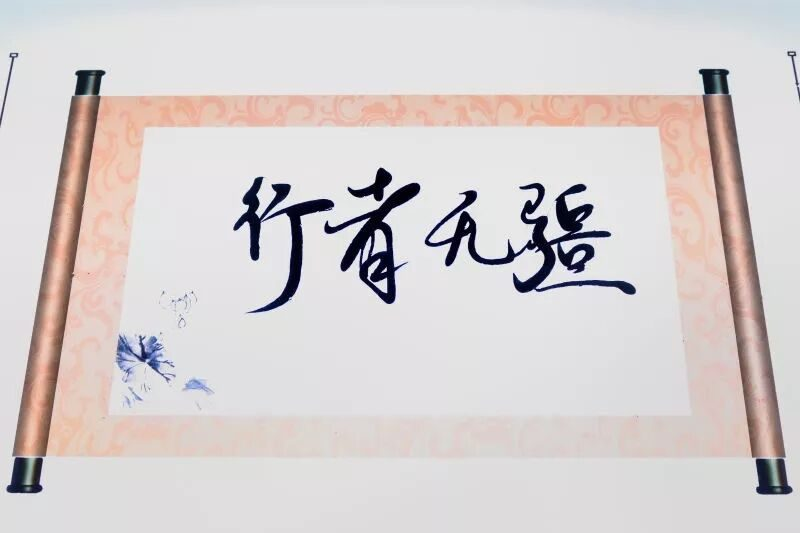
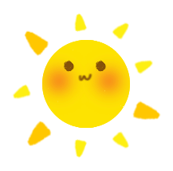
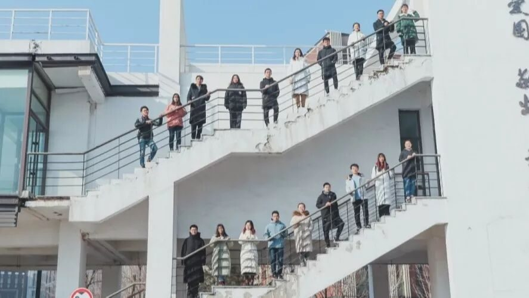
来源 | 行者无疆实践团
文字 | 王小玉
排版 | 张清雅
审核 | 段智然 康艳虎 黄玲
行者无疆实践团
QQ：2758025831

随行者一起认识世界
长按二维码